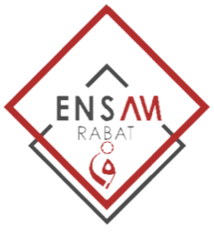

Jumeau numérique d'une ligne de production
ENSAM Rabat · Industrie 4.0 · Prof. M. Zemzami · 2026/2027
Déconnecté
t = 0 s
En marche
En attente
Bloqué
En panne
Produit brut
Traité
Contrôlé
Emballé
Cliquez sur une machine pour la sélectionner.